Design review / 2026.09.22
从功能入口集合， IELTS Learning Studio 的设计基础值得保留。真正需要优先改变的，不是配色，而是入口层级、首屏可操作性和答题布局的可靠性 。
现有模板与样式评审 桌面 / 平板 / 手机 第一轮：只评审、不改代码 第二轮：修复已实施并复测 保留视觉识别 森林绿、浅底色、阅读排版、清晰卡片
让下一步显而易见 先继续学习，再浏览工具，管理入口下沉
先可靠，再精致 修复响应式与事件绑定，再统一细节
01 / 评审范围与边界 检查站点外壳、首页、材料库、练习中心、在线答题、结果解析、知识点与写作界面；结合路由、表单及样式级联分析。预览使用独立数据库副本，不调用模型，不更改原有学习记录。
代码证据与视觉验证分别标注。本文属于启发式评审，不包含用户访谈、真实转化率测量或完整无障碍认证。方案中的首屏与操作步数属于建议验收目标，不是已证明的收益。
02 / 值得保留的基础 不要推倒重做。 已有语义明确的主按钮与状态标签；练习支持双栏阅读、可调分隔线、浏览器草稿与服务器保存；支持未答题跳转、漏答确认、原文证据和中文解析；材料生成有样篇批准门槛；部分控件已具备焦点样式、触控适配和减少动态效果支持。
下一版应延续这些能力，优先处理“能力存在但入口难找”与“视觉正常但交互不可用”的问题。
03 / 问题清单与优先级 P0：关键任务可靠性，发布前修复；P1：核心体验与信任问题，下一迭代处理；P2：一致性与效率优化。
全部 P0 P1 P2
P0
01. 小屏答题布局的 CSS 级联存在冲突 问题： 早期媒体查询设置单栏，但后置通用规则重新定义三列；后面的移动分栏样式只隐藏面板，没有重设网格。实测已确认空列与窄阅读区：390px 视口下容器可用宽 364px，却保留 320 / 12 / 390px 三列；768px 视口下文章区域仅宽 332px，右侧大块留白。此处不是推测，也不应仅靠隐藏横向滚动条处理。
方案： 默认单栏，在 ≥1025px 的媒体查询中才开启双栏与分隔条；隐藏的面板不保留轨道。手机保证全文和题目都能使用完整内容宽度；平板另行验证，而不是简单等同手机。
代码证据：static/app.css:12–15, 63, 84–94。实际尺寸验证见后文。
P0
02. 安全策略与内联事件冲突，部分按钮和确认可能失效 问题： 严格脚本策略下，HTML 的 onclick / onchange / onsubmit 不被允许。受影响的是打印、分页自动提交及章节合并/拆分确认，不能仅视为视觉瑕疵。
方案： 使用同源外部脚本绑定事件；不要放宽脚本安全策略来迁就旧写法。对章节修改保留明确确认，对打印保留可见按钮及说明。
代码证据：app/security/headers.py:42；templates/corpora/preview.html:75, 138, 146；三个独立打印模板的内联 onclick。未实际执行章节修改。
P1
03. 12 个一级导航混合学习与管理任务 问题： 阅读、写作、知识点和导入、备份、设置处于同一层；移动端隐藏滚动条的横滚导航缺少“还有入口”的提示。用户必须先理解系统模块。
方案： 按“学习”与“内容管理”拆分。常驻学习首页、阅读、写作、知识库、情境小说；材料、生成任务、审阅、导出放入内容管理；备份、设置和退出进入账户菜单。手机使用 4 个稳定入口：首页、阅读、复习、更多。
代码证据：templates/base.html:19–32；static/app.css:20–24。
P1
04. 首页像介绍页，练习中心的操作出现得太晚 问题： 首页大标题加大尺寸产品卡，三项产品却采用两列网格，写作入口落到下一行。练习中心先展示介绍、私有存储与统计，再展示篇目；≤390px 又把四个统计格拆为单列。
方案： 首页第一屏展示“继续上次学习”；有草稿优先继续，无草稿显示推荐篇目，无内容则引导导入。练习中心压缩标题区域，把统计变为一行摘要，进行中的篇目置顶；增加状态筛选与搜索。
代码证据：templates/home.html:4–38；static/studio.css:1；templates/practice/index.html:4–24；static/practice-center.css:17–18。
P1
05. 无障碍能力不均衡，浅色小字需要校准 问题： 无跳过导航入口；答题页文本输入/下拉框缺少与题干的程序化关联；移动标签缺少完整面板关联与方向键切换；词汇卡用不可聚焦的 article 承担点击展开。
方案： 增加 skip link；为题组/输入提供 legend、label 或 aria-labelledby；标签与面板关联，支持方向键；词汇展开改用 button 或 details/summary；保存反馈采用状态播报。辅助文字使用更深的中性色。
代码证据：templates/base.html:17–35；templates/practice/session.html:27–32, 51–62；static/practice.js:241–246；templates/practice/analysis.html:34–41。颜色计算：#7d8a85 / 白底约 3.59:1，#8b948f / 白底约 3.12:1；建议常规正文至少 4.5:1。
P1
06. 状态说明暴露实现细节，任务结束缺少清晰下一步 问题： 任务页直接使用任务 ID 作标题、显示原始状态与 worker 信息；材料卡只展示最近任务文本而非可点击入口。结果页写“这台电脑的 SQLite”，与其他页面“私有服务器”说法混杂；首页还残留“两个工具”的旧文案。
方案： 用“某材料 · 第 1–10 章生成任务”命名，显示已完成/总数、失败原因及下一步；完成后主按钮为“开始练习”，失败时提供“重试失败项”。统一“浏览器暂存”与“已同步到私有服务器”，技术详情折叠。
代码证据：templates/jobs/detail.html:4–7；templates/corpora/index.html:91；templates/practice/result.html:21；templates/home.html:40。
P2
07. 多个知识入口命名接近，结果页未突出复习任务 问题： 词汇、知识点、练习生词本与错题分散在不同层；用户容易疑惑内容区别。结果页主操作是“重做本篇”，还未把错题复习作为主线。
方案： 统一归到“知识库/复习”，保留错题、已收藏词汇、自动汇总知识三个清晰标签，不合并底层数据语义。结果页先给题型表现与薄弱点，再“复习错题”；全部正确时改为“下一篇”。
代码证据：templates/base.html:24–25；templates/practice/index.html:9；templates/practice/result.html:16–24。
P2
08. 视觉令牌已有雏形，但字号、密度和断点尚未统一 问题： 多个样式文件重复覆盖通用规则；标题装饰、卡片留白、英文辅助标题占据较多空间。小字颜色、圆角、按钮样式分散定义，调整时容易造成跨页回归。
方案： 保留绿色品牌，明确中英文角色；中文界面用系统无衬线，英文长文保留阅读字体。统一 4/8px 间距、3 档标题、正文/辅助文本、按钮与状态组件；把断点和覆盖关系收敛到一处。
代码证据：static/app.css:1, 9–40, 84–103；static/practice-center.css:1–22, 136–148；static/studio.css:1, 10–11。
04 / 建议首页：先学习，后管理 以下为结构示意，不是已实现页面；数字与题目名称均为布局示例。建议默认按个人学习场景组织，保留内容制作人员进入管理区的直接入口。
IELTS Studio 学习首页 阅读 写作 知识库 情境小说 内容管理
你的学习工作台
从上次停下的地方继续。 本周进度 · 示例数据 继续练习 / 已同步 Water and urban life 已答 7 / 12 题 · 已用时 08:24
继续第 8 题 → 今天可以复习 错题复习 5 题 →
已收藏词汇 12 词 →
最近写作反馈 查看 →
无记录时展示轻量引导，不展示虚构进度。
阅读篇目 搜索篇名 全部 · 进行中 · 未开始 · 已完成
01 Water and urban life 进行中 · 标准 · 680 词 · 12 题
继续 02 Learning from natural systems 未开始 · 标准 · 720 词 · 13 题
开始 手机端优先显示标题 + 继续练习卡，复习入口紧随；底部四入口固定但避让安全区和页面主要操作。内容管理与账户操作在“更多”中可发现。
05 / 页面级落地方案 页面 建议结构与交互 验收目标 学习首页 / 练习中心 压缩营销标题；继续练习置顶；统计一行化；状态筛选、篇名搜索；主次按钮统一 390×844 及 1440×900 下，已有草稿时首屏可见“继续练习”；从首页一步进入草稿 在线答题 收起全站复杂导航；顶部仅退出/篇名/计时/保存；正文 17–18px、行高 1.7–1.85；底部题号导航、已答/未答状态和提交 320/390/768/1024/1440px 无内容裁切；切换视图保留阅读位置；输入不会被底部操作遮挡 结果 / 解析 结果摘要 → 题型表现 → 只看错题 → 题干/作答/答案/证据；正确题可折叠；优先复习错题或开始下一篇 每道错题可定位原文；分数与作答状态清楚；不把单篇正确率冒充正式 IELTS Band 材料 / 生成 导入 → 校准 → 样篇 → 批准 → 批量生成 → 练习的连续路径；用文章标题代替 UUID；卡片能重新进入运行任务 从材料卡找到最近任务；暂停/继续/取消随任务状态改变可用性；失败信息给出可执行下一步 写作 精简题目输入与作文编辑区；明确目标考试类型；强调自动保存、字数、提交状态及“AI 参考反馈”边界；补历史记录入口 刷新或失败不丢作文（需新增持久化验证）；报错定位到字段；范文生成是明确可选项；不把 AI 结果表述为官方成绩 全局组件 统一标题、按钮、状态、空态、错误态、反馈；补键盘与屏幕阅读器语义；只在需要时显示技术信息 主要控件触控区域建议 ≥44px；正文对比度 ≥4.5:1；键盘可完成作答、切换、保存和提交
06 / 分阶段执行，而非一次性翻新 阶段 A · 修复可用性 先守住核心任务 移动/平板网格级联 内联事件与脚本策略冲突 输入标签、焦点和保存状态 补桌面及小屏回归检查 完成标志：阅读、答题、确认和打印不再被布局或事件阻断。
阶段 B · 重构信息层级 围绕“下一步”布局 学习 / 内容管理分层 首页继续学习卡 练习中心压缩、筛选与搜索 任务重新进入和结果复习路径 完成标志：学习主操作在首屏，管理任务可以被找回。
阶段 C · 统一视觉系统 提升一致性与可维护性 统一字体、间距、状态色 组件与断点去重 知识库命名和帮助文案 建立页面与状态截图基线 完成标志：同种控件跨页面同样呈现、同样操作。
建议指标：进入练习所需步骤、恢复草稿成功率、未答题发现率、移动端横向溢出数量、任务找回成功率。先记录基线，再验证优化效果；不预设“效率提升百分比”。
07 / 实际界面证据（第二轮实测）
数据来自 outputs/ui-review/cdp_measure.py：用 DevTools 协议把视口强制为真实尺寸后读取元素几何。截图同源同期，命名 *-after.png（视口）、*-after-full.png（整页）。
视图 第一轮实测（缺陷） 第二轮实测（当前） 判定
平板 768×1024 · 练习页阅读区 332px（右半屏留白，占 43%） 734px（视口 768 − 两侧 17px） 已铺满 手机 390×844 · 练习中心首篇练习卡 1232px（首屏外） 771px（首屏内，视口高 844） 已进首屏 手机 390×844 · 首页「进入练习中心」 1208px 793px 已进首屏 桌面 1440×900 · 首页「进入练习中心」 约 891px（折线下方） 773px 已进首屏 手机 390 · 横向溢出元素 内容被挤出视口 文档宽 = 390，等于视口宽 无溢出 平板 768 · 一级导航 逐字竖排 707px 宽、按链接换行 已修 写作页 #writing-result 空结果区先显示（hidden 被 display 覆盖） computed display = none 已修 知识库 #kn-active-filters 无筛选时仍显示空筛选条 computed display = none 已修 模板内联事件处理器 打印 / 自动提交 / 确认共 6 处，被 CSP 静默拦截 8 个页面实测 [onclick],[onchange],[onsubmit] 计数为 0 已修 单选 / 复选框宽度 继承 input{width:100%}，撑满整行 13px 原生宽度（父容器 386 / 784px） 已修
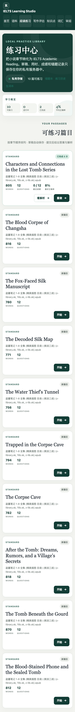
手机 390 · 练习中心整页：概览压成一行 4 格，首篇练习卡 771px 进入首屏。 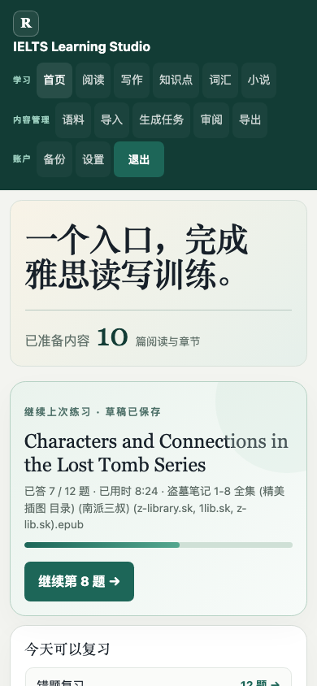
手机 390 · 首页首屏：「进入练习中心」793px，无需滚动即可点击。 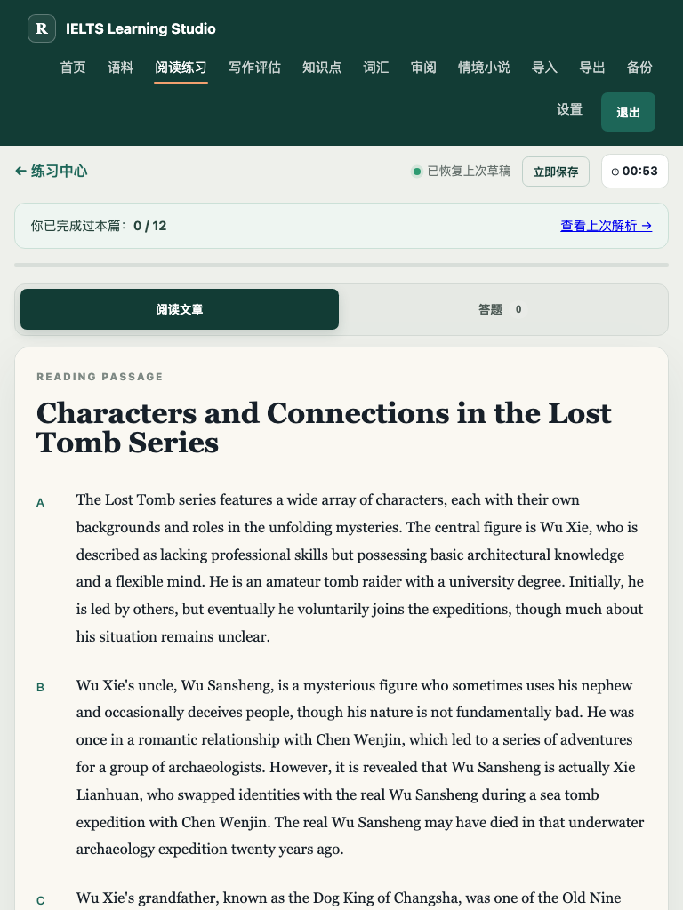
平板 768 · 练习页：阅读区 734px 铺满，标签页切换阅读 / 答题。 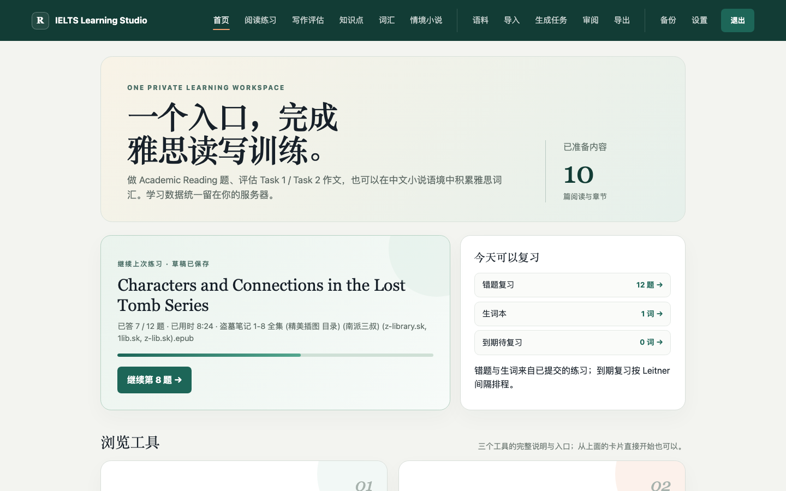
桌面 1440×900 · 首页：hero 收紧后首个 CTA 在 773px，产品卡进入首屏。 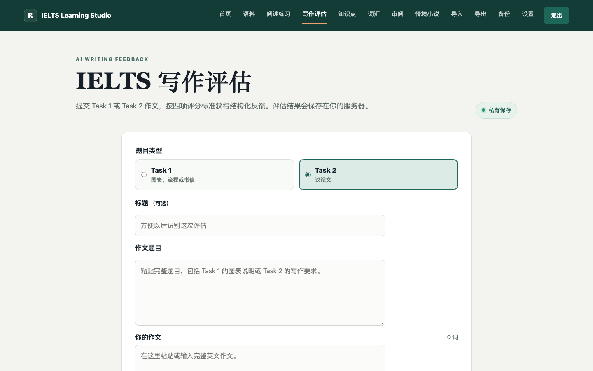
写作页 · 未提交评估时空结果区不显示（hidden 契约）。 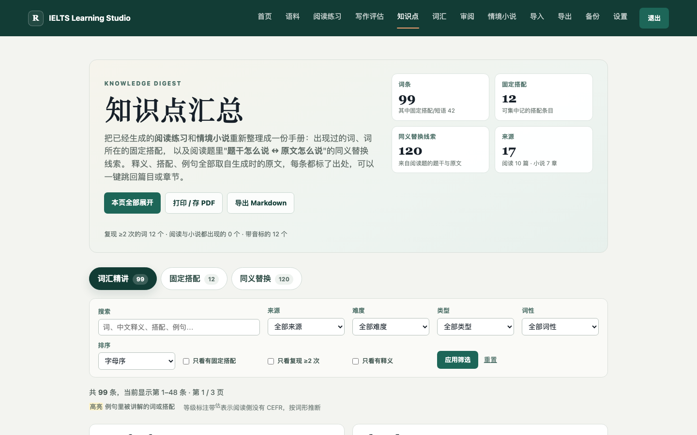
知识库 · 无筛选条件时不显示空筛选条（hidden 契约）。 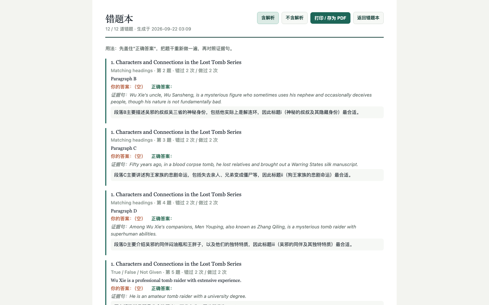
打印页 · 打印按钮改由 /static/print.js 绑定，CSP 不再拦截。 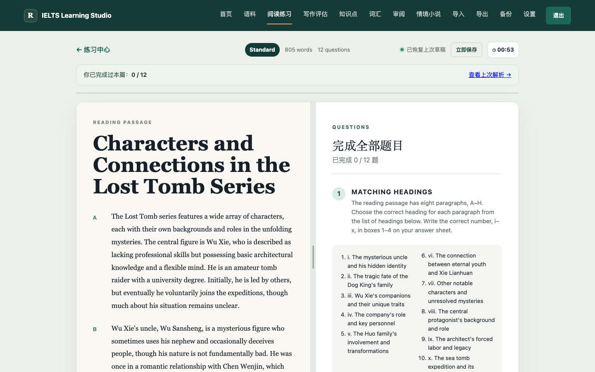
桌面 1440 · 在线答题：宽屏仍是双栏，未被移动端单栏规则波及。 08 / 伴随发现：不混入视觉改版 部分 GET 筛选表单包含 CSRF 隐藏字段，提交后可能把令牌带入 URL。应单独作为工程修复项移除 GET 表单中的该字段；不能因此削弱 POST 的 CSRF 保护。证据：templates/knowledge/index.html:48、templates/corpora/preview.html:73/81 等。本次未进行完整安全审计。
09 / 第二轮：修复与验收
本轮按「先修可用性，再调信息层级」的顺序实施，共四类改动。所有数值来自上面的实测表，不是估算。
对应问题 改动 文件
P0-02 内联事件被 CSP 拦截 打印按钮、分页自动提交、章节合并/拆分确认全部改为同源外部脚本（data-print-trigger、data-auto-submit、data-confirm），不放宽脚本策略 static/print.js（新增）、static/corpora.js（新增）、3 个打印模板、templates/corpora/preview.htmlP0-01 平板阅读区只占 53% ≤1024px 的标签页模式把双栏网格塌成单列（隐藏面板不再保留轨道）；701–1280px 导航改为按链接换行 static/app.cssP1-04 首屏可操作性 练习中心：概览压成一行 4 格、hero 与工具栏收紧，首卡 1232→771px；首页：≥901px 收紧 hero 与产品卡，CTA 891→773px；手机首页 CTA 1208→793px static/practice-center.css、static/studio.css隐藏状态被组件 display 覆盖 [hidden] 兜底（写作结果区、知识库筛选条等），并补单选/复选框宽度与 min-width:0 收缩规则static/app.css
回归保护：tests/web/test_ui_contracts.py 把这三类缺陷写成契约测试（内联事件为零、[hidden] 兜底齐备、手机首屏与单列网格规则在位），scripts/verify.sh 现为 666 项通过、Ruff 全绿。
仍未处理（保留给阶段 B/C，避免本轮扩大改动面）：导航改为「学习 / 内容管理」两层、首页“继续上次学习”卡、练习中心筛选与搜索、任务页命名与下一步、对比度与键盘/读屏语义、GET 表单里的 CSRF 字段。这些属于结构改版，需要先落模板骨架再统一视觉。
10 / 阶段 B1：首页先回答"现在点哪里"（已实施）
首页此前是介绍页：返工的用户找不到草稿，也不知道今天该复习什么。现在首屏由三块组成——继续练习卡 （有草稿时给出"继续第 N 题"）、今天可以复习 （错题 / 生词本 / 到期复习，全部来自真实记录）、以及下沉到下面的"浏览工具"。
视图 第一轮实测 B1 实测 判定
手机 390×844 · 「继续第 8 题」按钮 无此入口（只有产品卡 CTA 在 1208px） 653px 首屏内 手机 390×844 · 第一个复习入口（错题复习） 无此入口 785px 首屏内 手机 390×844 · 工具区标题 1208px 起是产品卡 1039px（下沉为次要内容） 符合预期 桌面 1440×900 · 继续练习卡 / 复习面板 无此入口 431px（并排） 首屏内 桌面 1440×900 · 「继续第 8 题」按钮 产品卡 CTA 891px 672px 首屏内 平板 768×1024 · 「继续第 8 题」按钮 无此入口 999px 首屏内 横向溢出 — 390 视口下文档宽 = 390 无溢出
数据来源：outputs/ui-review/seed_draft.py 用与生产同一套 service API 在隔离库里写入一条真实草稿（7/12 题、用时 504 秒），再由 cdp_measure.py 读取几何。没有记录时首页不显示一排 0，而是给出"导入素材"或"去练习中心"的引导——不虚构进度。
配套改动：词汇复习状态（box / 到期时间）的判定从 routes_vocabulary 提到 app/vocabulary/collection.py，首页与词汇页共用同一份"今天该复习哪些词"，避免两处给出不同数字；草稿卡不带 ?fresh=1，否则会丢掉已写好的答案（有测试守住）。
11 / 阶段 B2a：任务找得回来，导航按用途分组（已实施）
评审里最硬的一条代码证据：/jobs/{id} 在全部 33 个模板中没有任何入链 ——任务页只能从"提交后那一次跳转"进入。一旦离开，进行中、已暂停、已失败的任务就再也回不去，重试、继续、取消全部失去入口，这不是"不好看"而是真断链。B2a 补上入口，并把一级导航从"系统模块清单"改成"按用途分组"。
项目 改造前 B2a 实测 判定
任务页入链（33 个模板） 0 个 导航「内容管理 → 生成任务」+ 材料卡「N 个任务 / 最近任务」 已接通 任务行文案 UUID + running / completed_with_errors 等内部枚举 「第 2–10 章阅读生成任务」+ 材料名 + 进度条 + 中文状态徽章 可读 手机 390×844 · /jobs 首张任务卡 无此入口 612px 首屏内 平板 768×1024 · /jobs 首行 无此入口 529px 首屏内 桌面 1440×900 · /jobs 首行 无此入口 450px 首屏内 手机 390 · /jobs 表格 — 塌成卡片，行宽 366px，进度与状态不再逐字折行 可读 手机 390×844 · 一级导航 一条隐藏滚动条的横滚导航，视口外的入口要靠猜（头部约 130px） 三组换行全展开，13/13 个入口可见（头部 234px） 无隐藏入口 手机 390×844 · 「继续第 8 题」 653px（B1） 691px（导航变高后仍在 844px 首屏内） 首屏内 手机 390×844 · 第一个复习入口 785px（B1） 821px 首屏内 桌面 1440 · 一级导航 12 个链接平铺一行，看不出哪些属于内容制作 学习 6 / 内容管理 5 / 账户 3，组间分隔线（头部 75px） 已分组 横向溢出（390 / 768 / 1440） — 文档宽 = 视口宽，越界元素 0 无溢出
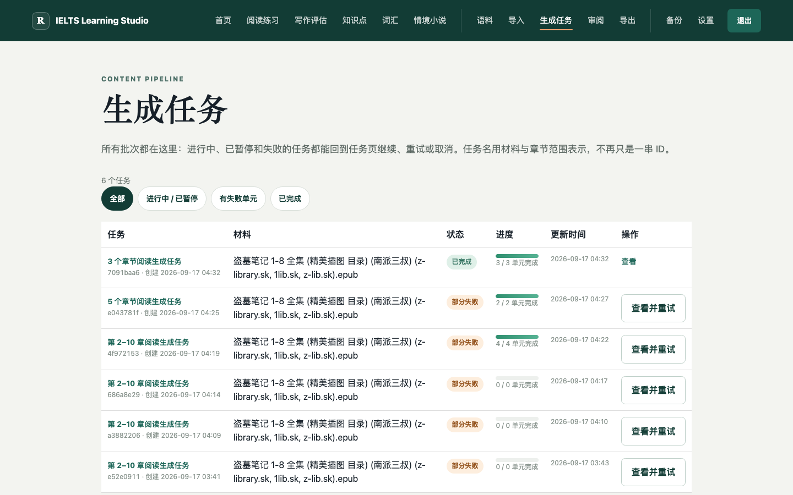
桌面 1440 · 生成任务：筛选标签「全部 / 进行中·已暂停 / 有失败单元 / 已完成」，任务名用人话（第 2–10 章阅读生成任务），状态为中文徽章。 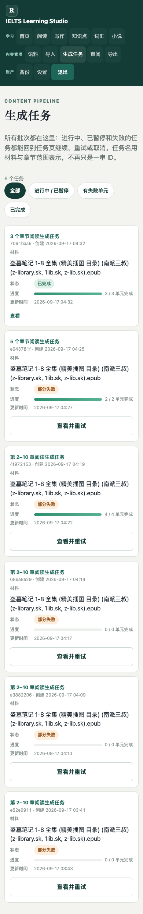
手机 390 · 同一份数据塌成卡片：字段名保留在左侧，进度条与「查看并重试」按钮都够宽可点。 桌面 1440 · 导航分组后仍是单行 75px，「继续第 8 题」672px 位于首屏。 手机 390 · 三组导航全部展开且无横向滚动：长标签在窄屏换短名（阅读练习→阅读），「继续第 8 题」691px、第一个复习入口 821px 都在首屏内。
状态文案与真实取值对齐是本轮的一个硬要求：库里存的是 completed / completed_with_errors / blocked，此前界面直接显示英文枚举。现在由 app/web/glossary.py 的 JOB_STATUS_LABELS 统一翻译，并有测试遍历 app.pipeline.queue 的全部 8 个状态与 3 种作业类型，确保"漏一个就露出英文"不会再发生；未知状态显示"状态未知"，不回落成内部值。
数据来源：outputs/ui-review/cdp_measure.py（DevTools 协议强制 390/768/1440 真实视口后读取元素几何）、隔离库 preview-data/state.db 中 6 条真实任务（1 条已完成、5 条部分失败）。筛选实测：?status=failed 命中 5 条、?status=finished 命中 1 条、?status=active 无命中时给出空态与「查看全部任务」。
12 / 阶段 B2b：复习收成一个入口，一张清单三张标签（已实施）
评审指出的第二类问题不是"入口太深"而是"入口太多且名字相近"：错题本、生词本（练习页的）、生词本（词汇记忆页的）、词汇复习、以及练习解析页里的即时收藏，一共五个近似入口。学习者得先猜"我今天想复习的那个东西叫什么名字"，猜错了就落在另一个页面上，那里还有另一套筛选。
现在有一个复习中心 ：/practice/review，一张清单三个标签——错题 / 生词本 / 词汇复习 ，每个标签上带着真实条数。导航里的「学习」组用「复习」替换了原本并列的「词汇」，首页"今天可以复习"的三行与练习中心的「错题本 / 生词本」都直接落到对应标签。
项目 改造前 B2b 实测 判定
复习类入口 5 个近似入口，需先猜名字 1 个（导航「复习」）+ 首页/练习中心直达对应标签 已收口 标签条数 — 错题 12 · 生词本 1 · 词汇复习 0（隔离库真实记录） 真实数字 壳内筛选会不会被甩出 — 筛选链接是 /practice/review?tab=mistakes&type=…，点击后仍留在壳里 不跳出 壳内提交回到哪里 回到独立页面 白名单内的 return_to 回到壳里；白名单外的值一律忽略 不开放重定向 旧地址 — /practice/mistakes、/practice/vocabulary、/vocabulary/review、/vocabulary 全部可用书签不失效 横向溢出（390 / 768 / 1440） — 文档宽 = 视口宽，越界元素 0 无溢出
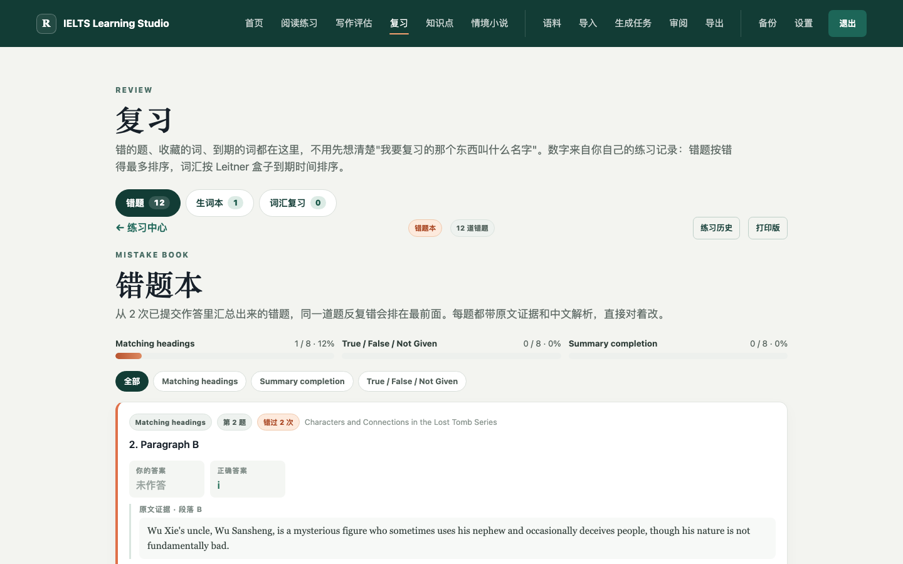
桌面 1440 · 复习中心：标签条带真实条数（错题 12 / 生词本 1 / 词汇复习 0），默认停在错题，题型筛选与逐题证据都还在原处。 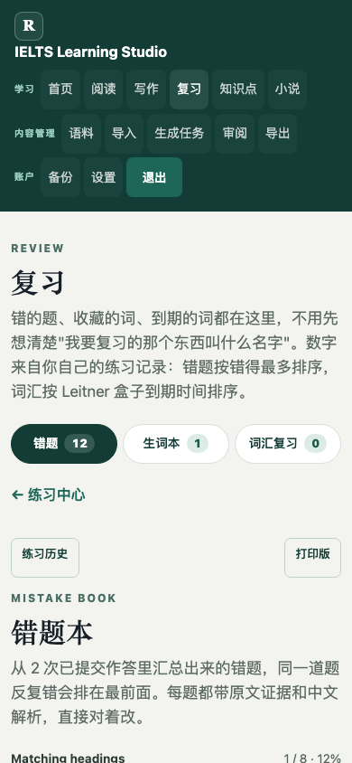
手机 390 · 三个标签平分一行并带条数，导航「复习」为当前项且不再有并列的「词汇」。 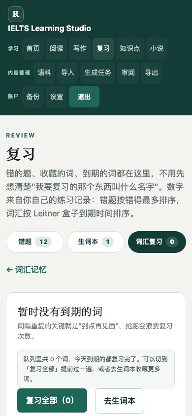
手机 390 · 词汇复习标签：没有到期词时说明"到点再见面"的原因，并给出「复习全部」与「去生词本」，不显示空表格。
实现上没有复制三份 UI：错题本、生词本、复习卡各自抽成一份 partial（templates/practice/review/_*.html），独立页面与复习中心共用同一份模板与同一个上下文构造函数 （mistakes_context / vocabulary_book_context / review_session_context）。因此"两处数字不一致"这类问题不会再出现，也不会因为新增壳而分叉出第二套筛选规则。
数据来源：隔离库 preview-data/state.db 与 cdp_measure.py。测试见 tests/web/test_practice_review.py（6 项：默认标签与条数、三个标签各渲染自己的清单、未知标签回落、壳内筛选前缀、return_to 白名单与开放重定向防护、旧地址仍可用、导航与首页指向单入口）。
13 / 阶段 B2c：窄屏底部四个入口（已实施）
顶部导航分组后，手机首屏能一次看到全部 13 个入口，但它们都在页面最上方：读长文、答题或翻任务列表时，想换一页必须先把页面滚回顶部。B2c 因此在窄屏加一条固定底栏（首页 / 阅读 / 复习 / 语料 ），只解决"拇指够不到"，不替代顶部导航。
项目 改造前 B2c 实测 判定
390×844 · 底部入口 无（只能滚回顶部） 固定底栏，4 个可见入口 已加 768×1024 / 桌面 · 同一页面 无 display:none，可见入口 0不上桌面 底栏占位 — body 底部留白 67px，内容不被压住不遮内容 在线答题页（.submit-dock） — 底栏自动隐藏、留白归零，提交栏不被遮挡 不叠两条底栏 顶部导航 13 个入口 仍是 13 个入口（底栏是补充） 未削减 当前项 — 首页时「首页」高亮；复习中心时「复习」高亮且「阅读」不高亮 状态正确 横向溢出（390 / 768 / 1440） — 文档宽 = 视口宽，越界元素 0 无溢出
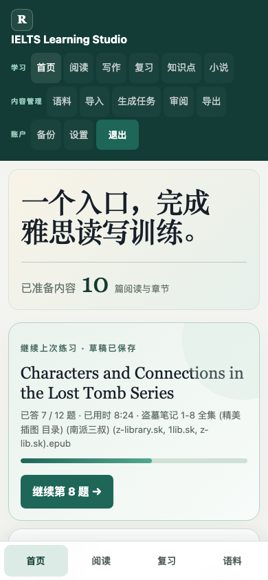
手机 390 · 底部四入口：首页 / 阅读 / 复习 / 语料，当前页高亮；继续练习按钮与复习入口仍在首屏内且不被底栏遮挡。 底栏与答题页提交栏的冲突是提前判掉的一条风险：两处都是贴底元素，同时出现会互相遮挡，所以规则写成 body:has(.submit-dock) .bottom-nav{display:none}，用页面自己是否含提交栏来决定，而不是维护一张"哪些页面不要底栏"的清单。打印时同样不显示。
数据来源：cdp_measure.py 新增检查项 bottomNavDisplay / bottomNavLinks / bodyPaddingBottom，在 390、768、1440 三个强制视口下读取。测试见 tests/web/test_ui_contracts.py::test_mobile_bottom_nav_adds_four_thumb_reachable_entries。
14 / 阶段 B3：长清单里找得到那一条（搜索、进度筛选、续做入口，已实施）
练习中心此前把每一篇完成的章节都渲染成同一张卡片：题号、成绩、状态都藏在卡片内部，想找「我做了一半的那篇」或「上次做砸的那篇」，只能从上往下逐张扫。B3 把三种最基本的定位方式挪到列表上方：按篇名搜索 、按进度筛选 、直接续做 。三者都走 GET，链接可直接分享，不依赖脚本。
项目 改造前 B3 实测 判定
篇目定位 只能逐张滚动浏览 服务端搜索 /practice?q=，空结果说明并给「清除」入口 已加 进度筛选 无（状态只以卡片角标呈现） 四个标签带实时计数：全部 / 进行中 / 未开始 / 已完成，可分享、可组合搜索 已加 续做入口 「继续」，不说是从第几题接着写 「继续第 N 题」，N = 草稿里第一个未答题，且按钮不带 ?fresh=1 更准 「有草稿 + 有旧成绩」 判为已完成 → 按钮是「重做」，带 ?fresh=1，一点就清空草稿 判为进行中，走续做路径；test_practice_library_prefers_a_newer_draft_over_an_older_score 固定这条 修掉丢答案风险 概览文案 「已完成」既指篇数又指作答次数 标签「已完成 N」按篇，概览「已提交 N」按次数，两个口径分开 不再混淆 空态 一句「还没有可练习的篇目」 三种：没有篇目 → 去语料生成；搜/筛无命中 → 一键清除；全部做完 → 去复习错题 给出下一步 390×844 首屏 首篇卡 771（B2c 未加控件）→ 加控件后一度退回 1050 搜索 587 / 筛选 641 / 首篇卡 697；底栏 787，互不重叠 回到首屏且更靠上 768×1024 首屏 首篇卡 1147（加控件后） 搜索 745 / 筛选 823 / 首篇卡 880 < 1024 收回首屏 横向溢出（390 / 768 / 1280） — 文档宽 = 视口宽，越界元素 0 无溢出 深色 hero 内的链接 --green #1d6658 落在 #173f37 上：1.72:1改为 #cfe6dd + 下划线：8.9:1（0,2,0 特异性盖过后加载的 corpora.css） 顺手修掉 门禁 687 passed（B2c 基线） 693 passed（新增 6 项）· ruff 全过 · CLI 冒烟通过 全绿
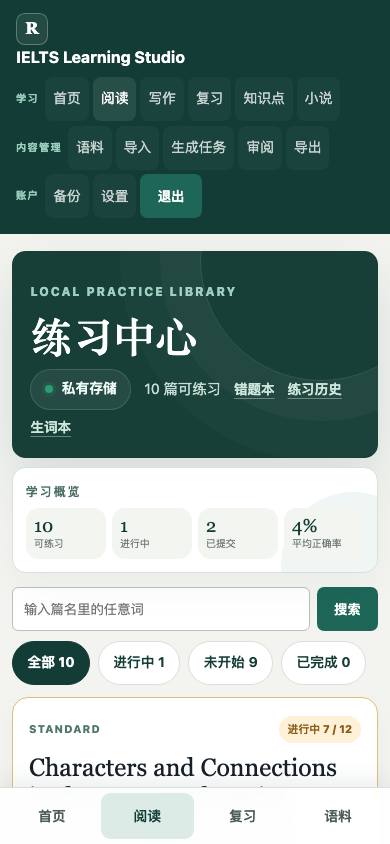
手机 390：搜索框、进度筛选和第一张卡（进行中 7 / 12）同屏；底栏固定在 787px，与筛选行之间留出约 100px 空隙。 数据来源：cdp_measure.py 新增检查项 libraryToolbar / librarySearch / stateTabs，复用 toolbarDisplay、stateTabsWrap、offenders，在强制视口 390 / 768 / 1280 下读取；改动的语义见 tests/web/test_practice_library.py（6 项）与共享进度模块 app/web/progress.py。
实施中发现并修掉一个静默失效：practice_library_context() 的逐篇循环用了变量名 state，正好覆盖同名的查询参数，于是 ?state= 一直不生效——标签看着能点，其实每次都返回全部篇目。为这类「看不见的失效」兜底的正是新的筛选测试（?state=done 只能出已完成，且当前标签带 aria-current）。
15 / 阶段 C1：把颜色、焦点与触控尺寸收进令牌（已实施）
评审里最难解释的发现是「同一页面上有十四个不同的灰」。它们不是设计决定，而是每个组件各挑一个的累积结果：#66736e 到 #9aa4a0，实测对比度 2.18:1 – 4.49:1 ，也就是全部低于 WCAG AA 的 4.5:1。另有 <a class="text-link danger"> 同时套上按钮红底 #9c3434 与深红字 #a8431f，实测 1.18:1 ——几乎看不见。C1 把颜色收成一份令牌，并补上跳转链接、可见焦点环与触控尺寸。
项目 改造前（实测） C1 实测 判定
对比度不达标元素（1280×900，8 个页面） 12 + 37 + 60 + 37 + 19 + 108 + 24 + 1 = 298 全部 0 达标 对比度不达标元素（768 / 390） 未逐页测量（390 首页 12 处） 768 与 390 各 8 页全部 0 达标 同一页面出现的灰 最多 14 个近似值（#66736e… #9aa4a0） 4 个语义令牌：正文 / 次级 / 小字 / 装饰 收敛 调色板定义处 app.css 自带一份（另有 print.css 子集）只留 tokens.css，令牌旁标注实测对比度 单一来源 .text-link.danger（删除）1.18:1（撞上按钮红底） 6.02:1，且不再继承 .danger 的红底 修掉 装饰性大数字（01/02/03、书脊序号） 2.18:1（32px，阈值 3:1） 3.24–3.58:1，走 --ink-decor 达标 跳转链接 无：键盘要按 13 次 Tab 才到内容 跳到主要内容 是 body 第一个可聚焦元素，指向 #main已加 焦点环 仅输入框有 40% 透明浅绿描边（≈1.4:1） 全站 :focus-visible：3px 深绿 + 2px 浅色外环；深色页头/底栏换成浅色环 可见 触控目标（除正文行内链接） 页头 37px、品牌 32px、表格动作 20px、重置 27px、复选框 13px 桌面 ≥24px、≤900px ≥44px；页头/底栏 ≥44×44；复选框按包着它的 label 计 达标 页头在手机上的高度 234px（三行导航） 仍为 234px：放大命中区用负外边距抵消，不改版面 未回退 横向溢出（390 / 768 / 1280） 0 仍为 0，越界元素 0 未回退 减少动态效果 四处各写一份，且只覆盖部分组件 accessibility.css 一处统一：过渡/动画 0.001ms、位移取消统一 门禁 702 passed（B3 基线 694 + 新增 7 项契约） 702 passed · ruff 全过 · CLI 冒烟通过 全绿
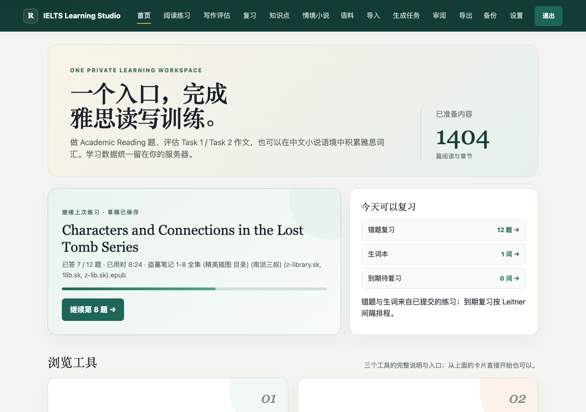
桌面 1280：说明文字与统计标签加深到 4.87–5.62:1；页头仍是同一行，只是每个入口的可点高度变成 44px。 数据来源：审计脚本逐元素读取 computed style，按 WCAG 2.1 相对亮度公式计算每个文本节点与其最近不透明背景的对比度（大字号阈值 3:1，其余 4.5:1），并测量 8 个页面在 1280 / 768 / 390 三个强制视口下的控件尺寸。豁免项单独计数而不是静默忽略：正文行内链接（2.5.8 豁免）每页 0–11 个，失效控件（1.4.3 豁免）按 .disabled / aria-disabled 识别。契约测试见 tests/web/test_ui_contracts.py 新增的 7 项（跳转链接与 #main、样式表加载顺序、调色板单一来源、旧灰色字面量清零、令牌自带实测值、焦点/动效集中定义、危险链接不再继承红底）。
加载顺序是这一层的关键：tokens.css 必须最先（所有组件都从它取色），accessibility.css 必须最后（跳转链接、焦点环、命中区要盖过组件）。组件里的颜色字面量已逐个替换为令牌（5 个样式表共 67 处），所以「加深某种灰」以后只需要改一行；print.css 保持自己的纸面调色板，不改动。
16 / 阶段 C2：把十三个断点收敛成六档（已实施）
断点散落是「同一个组件在不同宽度忽然变样」的根源：五个样式表里共出现 390 / 420 / 560 / 600 / 700 / 760 / 880 / 900 / 901 / 980 / 1024 / 1080 / 1280 十三种宽度，其中 880 与 900、980 与 1024、760 与 700 三组各自管着相邻的一小段区间，改版面时几乎不可能记住哪条在哪生效。C2 把它们归并成六档，并在 tokens.css 顶部写出每一档的语义。
档位 宽度 语义 并入的旧值
--bp-xs420px 窄手机：单列、隐藏次要说明 390 --bp-sm560px 手机：紧凑 hero、概览压成一行 600 --bp-md700px 手机横屏 / 大手机：底栏出现、库工具栏隐藏 — --bp-lg900px 平板：双栏塌成单列，触控尺寸补到 44px 880、901 --bp-xl1024px 小笔记本：多列容器收成两列或一列 980、1080 --bp-2xl1280px 桌面：导航收成一行、内容 1120px —
701 / 901 / 1281 保留为对应档位的 min-width 互补写法（@media (min-width:701px) and (max-width:1280px) 一类成对规则需要它们），其余宽度不再出现；print 与 prefers-reduced-motion 与宽度无关，不受影响。
探测结果（4 个页面 × 12 个边界宽度 = 48 次测量） 变化 判定
/ @ 900、/practice @ 900、/corpora @ 900、/knowledge @ 900主区留白 48/24 → 32/16px，多列容器各宽 16px 平板档从 880 挪到 900 的预期结果 / @ 600主区上留白 12.8 → 20px（hero 不再走手机紧凑版） 窄手机档从 600 收到 560 的预期结果 其余 43 个视口 无任何变化 未受影响 越界元素 / 文档宽度（全部 48 个视口） 仍为 0 / 等于视口宽 无横向溢出 600 与 900 两个变化宽度上的对比度与触控复测 4 个页面各 0 处不达标 收敛未回退 C1
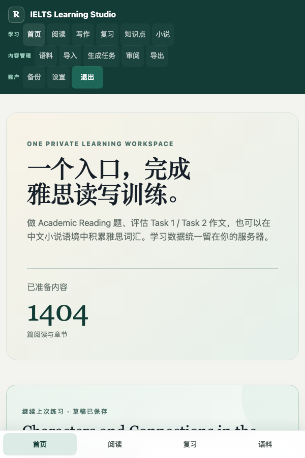
600px：窄手机档在 560 结束，这里走平板档——hero 竖排、留白放宽，版面仍然正常。 探测脚本对每个视口记录文档宽度、越界元素数、页头高度、主区留白，以及多列容器解析后的 grid-template-columns，改动前后各跑一遍逐键对比。新增契约测试 test_breakpoints_come_from_the_documented_set：只允许六档与三个互补值，且六档必须都仍在使用（防止「收敛」成只剩一两档导致响应式失效）。
这一阶段没有再动样式表版本号：C1 把 app.css 提到 v=9 等值尚未随任何一次部署上线，服务器上仍是 B2c 的 v=8，因此本次发布只需带上 C1 已提升的版本即可，无需二次跳号。
17 / 阶段 A：情境小说从「一个输出目录」改成「按书归档」（已实施）
这一节修的是最伤信任的一类 bug：页面顶部写着《诡秘之主》，下面的章节列表却是《盗墓笔记》。根因不是显示层，而是磁盘布局——全站只有一个 输出目录 output/context-novel/，导入新书只替换 active_source.json 与 input/context-novel/active/source.*，上一本的成品要么被同名文件覆盖，要么变成没人认领的孤儿。线上实测：active_source.json 是 15:25 导入的《诡秘之主》，而同目录的 index_entries.json 加 15 个章节 html/docx 全部属于 09:18 导入的《盗墓笔记》。
维度 改造前 改造后
源文件 uploads/<sha256>/source.<ext> + active/source.<ext>（只有最后一本）library/<sha12>/source.<ext>，按 sha256 去重、永不删除，原件名记在 book.json成品 全站共用一个目录，同名即覆盖 books/<sha12>/，每本书自己的 html、docx、词汇表、进度库、报告、运行配置导入新书 覆盖 active_source.json，页面换书但章节列表还是旧书 登记进书库并成为「当前生成目标」，旧书的源文件与成品原地保留 查看 只有一个隐含的「当前书」 /novel?book=<id>，页面上「我的书」列出全部书（书名、章节数、大小、已生成、导入时间、当前目标徽章）章节列表 一次铺开全部章节 每页 20 章 + 页码条（首末页 + 当前±2，其余省略号，当前页 aria-current，越界页码钳到最后页） 旧数据 — 一次性 migrate_legacy()：按章节标题把旧成品归属到匹配度最高的书，只复制不删除 ；匹配不上就留在原地并写 migration_log.json
「生成 0 章却显示成功」的修复
第二个问题是失败被当成成功：worker 只看进程退出码。今天《诡秘之主》的样章连续三次被质量检查拦下（density_too_low，要求每 500 字至少 20 个词条），日志里是 completed: []、inserted_total: 0，而 run_status.json 依然写着 status: completed，页面于是显示绿色成功配一个空章节列表。现在运行状态多记一个 outcome：ok（有章节产出）、no_chapters（进程正常但零产出）、failed（非零退出）；同时从日志尾部读出 chapters_completed / chapters_failed / inserted_total / failure_reason，页面直接展示失败原因与下一步建议（例如「换一章更长的，或调低密度下限；已成功的章节不受影响」）。
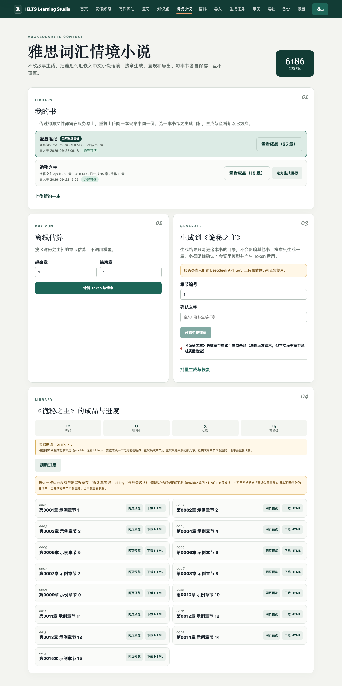
失败不再只是一个数字：统计下面直接写「失败原因：billing × 3」，并给出下一步（充值或换密钥后点「重试失败章节」，只跑失败的那几章）。 验收
检查项 结果
导入两本不同小说 书库两行都在；第二本成为当前目标；第一本的成品仍可按书查看 重复导入同一份文件（sha256 相同） 只有一本书，imported_at 保持首次导入时间，源文件不被改写 25 章分页 第 1 页 20 条、第 2 页 5 条，页码条含 aria-current，page=99 钳到第 2 页 旧布局迁移 旧成品被复制到标题匹配的书目录下，旧目录原件保留，写 migration_log.json；匹配不上则只记 note 失败原因 density_too_low 的原因与建议出现在页面上，不再是绿色成功路径安全 书目录内的 ../ 穿越、未知 book 一律 403/404，不能借另一本书的 id 读别人的成品 自动化 scripts/verify.sh：723 passed（书库层 8 条 + 页面/分页 5 条 + 运行状态 2 条 + 迁移容错 1 条 + 失败原因 3 条），ruff 全绿
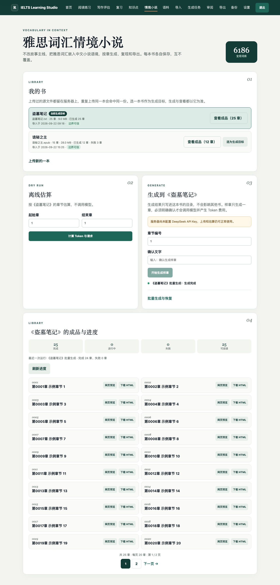
改造后的情境小说页：先说清「你在看哪本、生成哪本」，再是这本的成品的章节分页。 服务器上的真实迁移结果
部署后第一次打开书库时迁移自动执行，服务器上原来是两本混在一起的：uploads/ 里是《盗墓笔记》（15.1 MB）与《诡秘之主》（28.0 MB），而 output/context-novel/ 里的 15 个章节文件实际属于《盗墓笔记》。迁移把它们分成两本书，日志写得很明确：
notes: 旧成品 15/15 章标题命中，归入《盗墓笔记》
attributed_to: e9438d3ac78e 盗墓笔记，matched_chapters 15
copied: html, chapters, chapter_json, chunk_checkpoints, raw_responses, failed,
index_entries.json, index.html, glossary.json, glossary.xlsx, state.sqlite3, reports/usage.json
迁移后的页面：两本书各一行（《诡秘之主》带「当前生成目标」徽章、《盗墓笔记》显示「已生成 15 章 · 失败 4 章」），《盗墓笔记》的 15 章在它自己的目录里可读（/novel/preview/1?book=e9438d3ac78e 返回 200），《诡秘之主》显示「这本书还没有可阅读的章节」；未知书 id 取文件一律 404。旧的 uploads/、active/、output/context-novel/html 与 15 个文件全部原位保留，需要时可回退核对。
旧布局里只记录过最后一次 导入的原文件名，所以更早导入的书只剩 source.epub 这样的文件名；取名顺序是 epub/docx 的 dc:title → 文件名 → source，这次两本书都靠 dc:title 认出了《盗墓笔记》与《诡秘之主》。需要改名时直接编辑 input/context-novel/books.json 里对应条目的 name 即可，文件与成品都不会动。迁移后的旧目录、上传缓存与运行日志一律保留。
18 / 追问：《诡秘之主》为什么失败 7 章（已查清，并让页面自己说明原因）
上线后页面显示《诡秘之主》「完成 4 / 进行中 0 / 失败 7 / 可阅读 4」，点「刷新进度」数字不变。先回答一件事：这些数字本身是对的，也不是两本书串了数据。「刷新进度」就是重新读一次这一本的进度库，而进度库一章一行、记的是当前状态 。旧的全站共享进度库已经复制给《盗墓笔记》（15 完成 / 4 失败），《诡秘之主》这次生成用的是它自己目录下的 books/cc1ce5ea5bea/state.sqlite3，两本书没有互相污染。
真正的根因在失败行的 error_type 里：7 章全是 billing ——模型账户余额或配额用尽（DeepSeek 返回余额不足），不是质量门禁、也不是章节内容问题。时间线也很清楚：16:14–16:20 第 1、2、4、5 章正常完成（150 / 171 / 231 / 193 个词条，共插入 745 条）；16:19–16:22 第 3、6 章各撞上一次 ChapterConversionError；16:22 起余额耗尽，连续 5 章 billing，组件按 max_consecutive_failures=5 主动停下批处理，于是「失败 7 章」定格。之后再点「重试失败章节」，又连续 5 次 billing 中止——所以刷新多少次都一样。
章节 状态 error_type更新时间（UTC）
1 / 2 / 4 / 5 completed — 08:16–08:20 3 / 6 failed ChapterConversionError08:19 / 08:21 7 / 8 / 9 / 10 / 11 failed billing08:22–08:24
reports/web-generation.log（尾部）
第 6 章失败：billing（连续失败 1）
第 8 章失败：billing（连续失败 2）
…
连续 5 章失败，已停止批处理
{"requested": 20, "completed": [1, 2, 4, 5], "failed": {"3": "ChapterConversionError", "6": "…", "7": "billing", …},
"inserted_total": 745, "aborted": "连续 5 章失败，已停止批处理"}
run_status.json
{"status": "failed", "outcome": "failed", "description": "《诡秘之主》失败章节重试",
"chapters_completed": 0, "chapters_failed": 5, "failure_reason": "第 3 章失败：billing（连续失败 5）"}
这次改的两件事
一、页面要说出「为什么失败」。 以前只给数字，操作者只能猜。progress_counts() 现在顺带按 error_type 汇总失败原因，统计下面多一行「失败原因：billing × 7」加下一步；FAILURE_HINTS 也补齐了组件真实会报的词——billing、authentication、rate_limit、RunLimitError、empty_response，并按「从具体到宽泛」的顺序匹配，避免 authentication 被宽泛的 auth 抢走。billing 的提示特意写明：充好值或换密钥后点「重试失败章节」，只跑失败的那几章，已完成的不会重跑、也不会重复收费 。
三、线上验收时又抓到一处「对不上」。 部署后用真实数据核对，进度库里有 11 行（completed 4 / running 2 / pending 2 / failed 3），页面只显示 完成 4 / 进行中 2 / 失败 3——被中断（崩溃恢复重置）的 pending 章节既不算完成也不算失败，看着像凭空少了两章。统计现在会在这类章节存在时多一格「待重试」，四个数字相加即等于进度库的行数；「断点继续」会把它们接着跑完。
二、修掉上一轮我自己带进来的 CSS 回归。 书库那一节样式被写进了 @media (max-width:560px) 里面，结果是只在窄屏生效 ：桌面端书库整块没有边框与徽章（「当前生成目标」变成一行纯文本）、页码条也没有样式。现在这节移到媒体查询之外，并加了一条契约测试把这类错误钉住：按花括号深度取出顶层选择器 ，逐个检查 .book-library / .book-row / .book-badge / .pagination-pages .page-number / .failure-reasons 等确实在顶层，再用窄屏专用的 .book-row{flex-direction:column…} 作负面对照。把这条测试拿去跑改动前的 CSS，它会失败（实测顶层缺失这 5 个选择器）。
验收
检查项 结果
失败原因分布 chapter_progress 里 7 个 failed 全为 billing；页面显示「失败原因：billing × 7」+ 充值/重试建议统计对得上进度库 线上实测一次：completed 4 / running 2 / pending 2 / failed 3 = 11 行；页面补上「待重试 2」，四个数字相加正好等于行数（此前 pending 不显示，看着像少了 2 章） 「可阅读 4」与「完成 4」 一致：index_entries.json 4 条章节目录、4 个 HTML 文件，与被过滤后的完成数对得上 桌面端书库样式 1280 宽下书库整块满宽、行有边框与背景、当前目标为深绿徽章、页码条为方形页码按钮 窄屏 390 宽下行内按钮铺满、四个统计块排成 2×2、失败原因块可读 自动化 scripts/verify.sh：723 passed，ruff 全绿（新增失败原因汇总、页面原因行、billing 提示、CSS 顶层契约共 4 条）
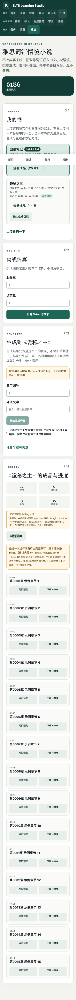
手机 390：《诡秘之主》的成品与进度——统计 2×2，失败原因与下一步紧跟在数字下面，不再需要靠猜。 下一次生成前要做的
先解决余额（充值或换一个可用的 DEEPSEEK_API_KEY），再点「重试失败章节」：它会只挑这 7 章重跑，按当前用量估算约 7 次模型请求。若仍想换更长的章节重试，用「批量生成」填章节范围即可；两种方式都不会重跑已完成的 4 章。
写这份报告之后再核对了一次线上页面：那一轮「失败章节重试」已经跑完，完成数由 4 升到 7（失败仅剩 2 章 ChapterConversionError），旧的 billing 行已在本轮重试中成功——余额问题不再出现，剩下的只是个别章节的转换错误，再点一次「重试失败章节」或换章节即可。说明：失败的章节会被原地重试并覆盖状态，所以「失败 N 章」是当前状态而不是累计次数。
19 / 追问：留白难看 + 失败原因不够清楚（已修，含一处缓存坑）
你的两点反馈分别是「有些东西只有三块，自然空出一块地方」和「失败原因等等都不够清晰」。第一点查到的是上一轮修复没真正到达你的浏览器 ，第二点确实是文案设计问题。
一、留白的根因：浏览器手里还是旧样式
第二轮把书库样式从媒体查询里搬到了顶层，线上 CSS 也确实是新的（拿服务器上的 studio.css 按花括号深度取顶层选择器，.book-library / .book-row / .book-badge / .pagination-pages .page-number 都在），可你看到的仍是旧行为。原因有两层：
样式表地址是 /static/studio.css?v=3，这一轮之前一直是 v=3——文件改了但 URL 没变 ；
更关键的是 app/security/headers.py 里的 CACHEABLE_PREFIXES 只用来豁免 「私有数据不许缓存」，/static/ 因此完全没有 Cache-Control 。缺这个头的静态文件，浏览器按启发式规则自己决定保鲜期，于是可以长时间直接用本地那份旧 CSS。
旧样式（被关在 @media (max-width:560px) 里）意味着桌面端第 1 块「我的书」不是满宽：网格排成「我的书 + 离线估算 / 生成到《…》+ 空 」——正是你看到的「三个块空出一块」。每轮靠手加 ?v= 并不可靠，所以这轮直接改机制：/static/* 一律返回 Cache-Control: no-cache（保留 ETag，命中就是 304，几乎没有带宽成本），后续改动上线后刷新即可见；同时把 studio.css 提到 ?v=4，让已缓存旧文件的浏览器立刻换新。
二、失败原因：从一个英文关键词 + 两句重复建议，改成一个说明块
旧文案是「失败原因：ChapterConversionError × 1」加两块黄条，两块里写的是同一句建议，而且「最近一次运行没有产出完整章节」在完成了 3 章、失败 2 章 的那次运行之后是错的。现在的样子：
这 3 章没生成出来，原因如下
· 模型账户余额或配额不足 billing × 2 · 第 3、6 章
· 这一章的正文转换失败 ChapterConversionError × 1 · 第 7 章
────────────────────────────────────────
下一步：充值或换一个可用的密钥后点「重试失败章节」：只跑失败的那几章，已完成的章节不会
重跑、也不会重复收费。 换一章，或按章节范围分批重试。
FAILURE_LABELS（中文说法）与 FAILURE_HINTS（下一步）共用一份「从具体到宽泛」的关键词表：页面不再直接甩 ChapterConversionError 这种内部标识，认不出的原因原样显示、不编造解释，authentication 也不会再被宽泛的 auth 抢走。progress_counts() 除了按原因计数，还给出涉及哪几章 （第 3、6 章这种），超过 10 章显示前 10 章加总数；同一批失败只把建议写一次，不再两块黄条重复同一句。「最近一次运行没有产出完整章节」换成事实行：最近一次运行：《诡秘之主》失败章节重试 · 完成 0 章、失败 3 章 · 第 7 章失败：ChapterConversionError（连续失败 2）；只有这一次运行本身没产出任何章节（outcome=no_chapters）时才说「没有章节通过质量检查」。
顺手收掉两处小留白：统计块改成 auto-fit（4 格或 5 格都等宽，不会被拉长）；章节列表数量为奇数时最后一张卡独占整行（25 章的第 2 页只剩 5 章，实测最后一张铺满）。
验收
检查项 结果
桌面端不再有空格 1280 宽：01 我的书 满宽 → 02 离线估算 + 03 生成 并排等高 → 04 成品与进度 满宽，无空格 静态资源缓存策略 GET /static/app.css → Cache-Control: no-cache + ETag（新测试同时断言两者）；页面引用 studio.css?v=4失败说明块 两个不同原因分别成行（中文说法 + 原始标识 + 章节号），「下一步」只出现一次；这 3 章没生成出来，原因如下 与统计里的「失败 3」一致 事实行 最近一次运行：《诡秘之主》失败章节重试 · 完成 0 章、失败 3 章 · 第 7 章失败：…，不再出现与完成数矛盾的「没有产出完整章节」章节列表奇数 25 章第 2 页（5 张卡）最后一张铺满整行，右下角不空 窄屏 390 宽：统计自动换行、失败说明块可读、按钮铺满 自动化 scripts/verify.sh：724 passed，ruff 全绿（失败标签/提示关键词一致性、静态资源必须重新校验、失败说明块含原因与章节号各一条）
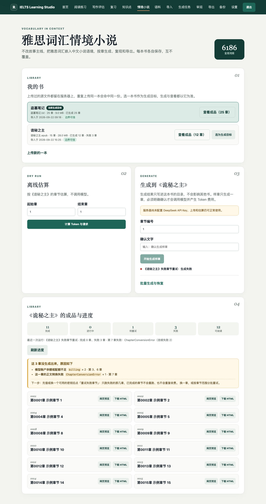
桌面 1280：不再有空格；「这 3 章没生成出来」下面逐条写原因、章节号和下一步。 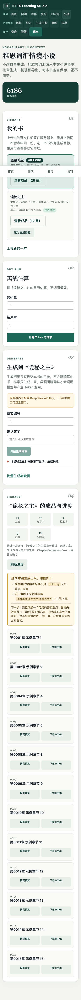
手机 390：统计自动换行，说明块保持可读。
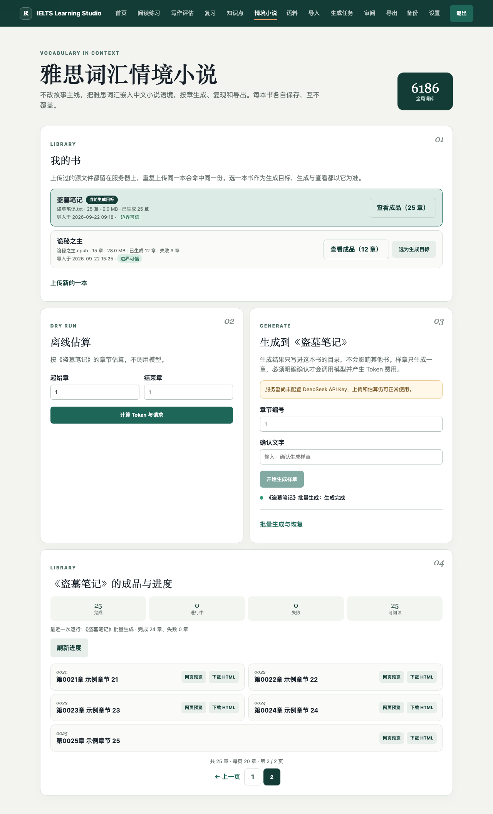
章节数为奇数时最后一张卡独占整行，右下角不再空出一格。 20 / 追问：「585338f5 这怎么能看出来什么错了？」（已查清 + 任务页自己会说了）
这位评委/操作者看到的画面是任务页 /jobs/585338f5-aada-46ec-bafe-7c036e346e81：
任务监控
585338f5-aada-46ec-bafe-7c036e346e81
状态：failed 正在自动更新
队列：已失败 · 错误码 handler_failed:RuntimeError
[暂停][继续][仅重试失败][取消]
序号 单元 状态
（空）
结论：从那个页面确实看不出来 ——不是他没看懂，是页面没写。原因有三层：
错误码本身不解释 ：worker 只在异常时记 f"handler_failed:{type(exc).__name__}"（app/pipeline/worker.py），真实信息（异常消息、堆栈）只进了 systemd 日志，jobs 表里根本没有存放错误消息的列。小说作业没有生成单元 ：这个任务的 kind=novel_component（payload：《诡秘之主》失败章节重试、arguments=["--retry-failed"]），进度由组件按章节记在自己的库里，所以 generation_units 一行都没有——「序号 / 单元 / 状态」表必然是空的。详情就在旁边却没被读 ：组件把这次运行的经过写在 books/cc1ce5ea5bea/run_status.json，任务页从来不读它。
顺着日志把这一次运行查清了（journalctl -u ielts-reading-studio-worker）：
作业失败 job_id=585338f5-… error_code=handler_failed:RuntimeError
Traceback (most recent call last):
File "app/pipeline/worker.py", line 176, in run_once
File "app/pipeline/worker.py", line 49, in novel_component_handler
File "app/pipeline/novel_runner.py", line 154, in run_novel_job
raise RuntimeError(f"novel component exited with code {result.returncode}")
RuntimeError: novel component exited with code 1
也就是说：没有崩溃、没有丢数据 。这次重试完成了 1 章、有 1 章失败（第 8 章失败：ChapterConversionError（连续失败 1）），组件按约定以退出码 1 结束，worker 如实记成 handler_failed:RuntimeError。要看懂它，得同时知道「组件报告在哪」和「单元表为什么是空的」——两件都不该让人猜。
改了什么
错误码说人话 （app/web/glossary.py）：handler_failed:RuntimeError → 「组件抛出了异常（RuntimeError）」；unknown_job_kind、worker_lease_expired 各有中文说法与下一步，认不出的原样显示、不编解释。失败原因块 （templates/jobs/detail.html，复用上一轮的 .failure-panel 样式）：失败任务显示「这个任务失败了，原因如下」，内容包括这次运行的说明 · 完成 N 章/失败 M 章 · 中文原因 + 原始标识 · 下一步 · 组件日志路径 · worker 日志命令（带这个任务号，可直接复制）。任务页读组件报告 （_novel_run_report）：读 payload 里的 status_path，但只认 output 目录内、文件名为 run_status.json 的路径——越界就当作没有报告（有测试守着）；中文说法与「下一步」复用组件的 failure_label/failure_hint，缺了就回落到关键词表。阅读作业的单元错误 ：新增 repository.latest_unit_errors()，把 stage_attempts.error 里每个失败单元的最后一条错误写到页面上（第 N 个单元 · 写作：生成 Passage · 第 K 次尝试：<原文>），阶段名也译成中文。状态与动作对齐 ：状态显示中文（状态：已失败，轮询接口同时返回 job_status_label/status_label），按钮只在该状态可用时出现——已失败的任务只剩「仅重试失败」，不再摆着「暂停/继续」让人误点；小说作业没有单元时，空表换成一句解释。列表页 ：任务列表的 错误码 handler_failed:RuntimeError 换成「失败原因 组件抛出了异常（RuntimeError）」。
验收
检查项 结果
原样复现线上任务 预览库里的作业 id 就是 585338f5-aada-46ec-bafe-7c036e346e81（kind/payload/错误码一致），截图即修复后的样子 原因可读 「这个任务失败了，原因如下」+ 组件抛出了异常（RuntimeError） + 这次运行：《诡秘之主》失败章节重试 · 本次有章节失败 · 组件退出码 1 + 完成 1 章、失败 1 章 + 这一章的正文转换失败 第 8 章失败：ChapterConversionError（连续失败 1） 日志可查 组件日志完整路径 + journalctl -u ielts-reading-studio-worker --since '-1 day' | grep -F 585338f5-… 路径安全 status_path 指向 output 之外时不显示组件报告，只保留错误码的解释（新增测试）阅读作业 失败单元显示「第 N 个单元 · 写作：生成 Passage · 第 1 次尝试：RuntimeError: provider exploded」（新增测试，数据来自 stage_attempts.error） 动作按钮 running → 暂停/取消；paused → 继续；failed → 仅重试失败；终态不再出现「暂停/继续」自动化 scripts/verify.sh：727 passed（新增 3 条任务页测试）、ruff 全绿
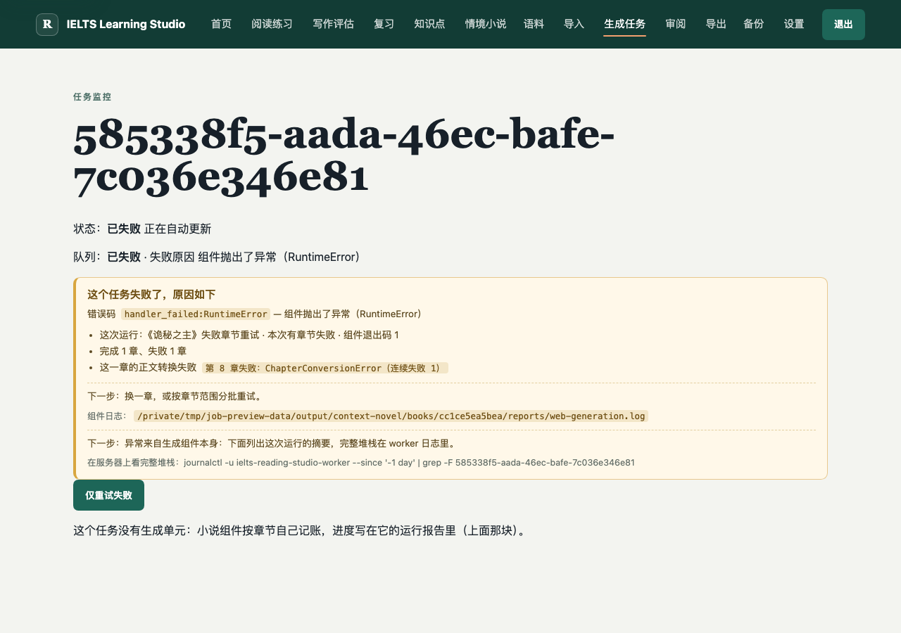
桌面 1280：同一个作业号，页面现在自己说清失败原因、下一步和日志在哪。 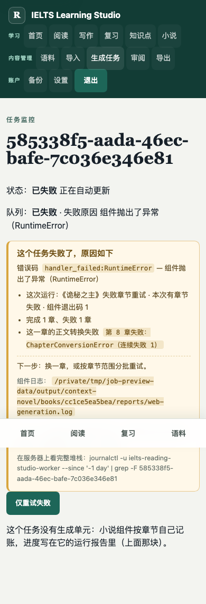
手机 390：原因块保持可读，空单元表换成解释，动作只剩可用的那一个。
评审对象：本地 IELTS Reading Studio 工作区 · 2026-09-22。第一轮为只读评审、未修改 templates/static/业务逻辑；第二轮按评审结论实施修复并复测。优先级基于可见影响和核心任务，并非用户研究结论。